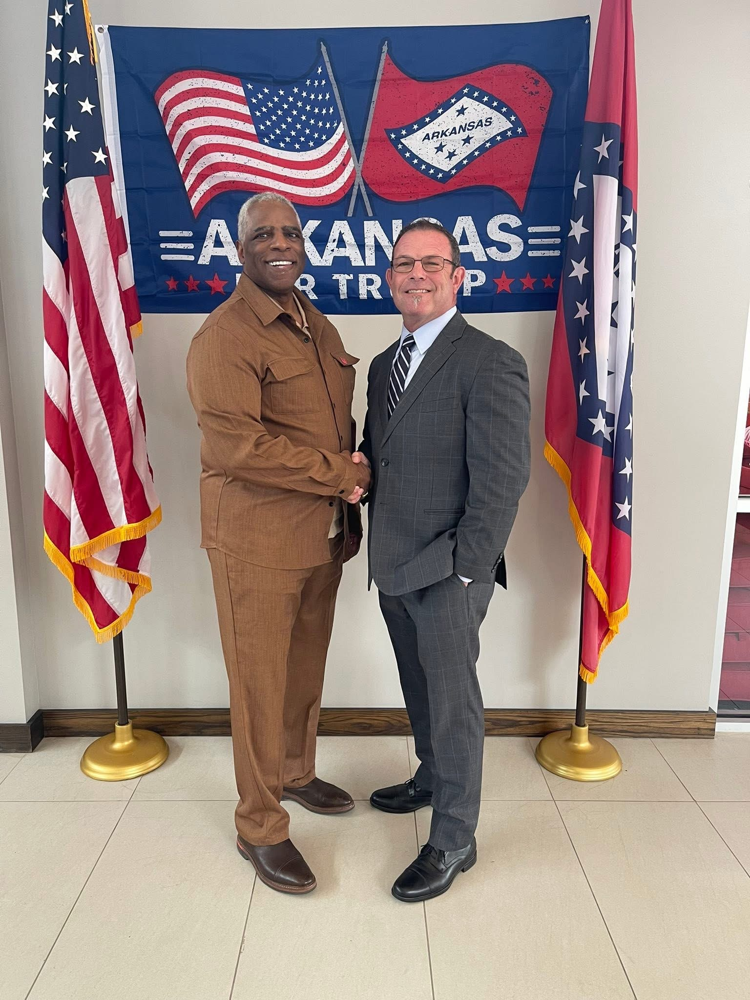

About
Meet Wes Freeman
Lifelong Arkansan. Small business owner. Proven conservative leader.

A Life Built in the River Valley
Wes Freeman has called Arkansas home for his entire life. Rooted in the River Valley, Wes has built his career and family life around the communities that make Pope and Van Buren counties the best place in Arkansas to raise a family, start a business, and grow old.
Wes and his family are active members of the River Valley community, with deep roots across Pope and Van Buren counties.
A Record of Conservative Leadership
For nearly two decades, Wes has served on the board of the Arkansas REALTORS® Association — a 100-year-old statewide organization representing more than 11,000 members. In 2025, he was elected its President.
In that role, Wes has worked closely with state and federal legislators in Little Rock and Washington, DC, reviewing proposed legislation and helping determine which bills the Arkansas REALTORS® Association would support or oppose. He has been at the table when the policies that protect the single most important investment most Arkansas families will ever make — their home — are decided.
That work has been recognized across the state, including being named one of 501 LIFE Magazine’s “Men of the Moment” for 2025.
Why Wes Is Running
Wes is running for Arkansas State House because he believes the people of District 44 deserve a representative with the experience, conviction, and conservative values to get to work from day one. After two decades of fighting for Arkansas families from the outside, he is ready to take that fight inside the State Capitol.
“My job title is ‘state representative’ — which means I represent my district and my state. It’s not about what Wes wants; it’s about what my constituents want. My vote affects the whole state, not just District 44 — even if you can’t vote for me, my vote will affect you. It’s less about Me, and more about We.” Wes Freeman
What Wes Believes
Wes is a proud conservative Republican who will fight every day for the values that built Arkansas: limited government, strong families, faith, freedom, and opportunity.
- Protecting private property rights — the foundation of Arkansas’s way of life.
- Responsible, phased tax relief paired with disciplined spending — protecting the services Arkansas families count on.
- Defending the sanctity of life and the Second Amendment without compromise.
- Strengthening schools through parental choice and local control.
- Standing up for rural Arkansas — our farmers, our small towns, and our River Valley way of life.
See where Wes stands on the issues
Join the Team
Wes is counting on neighbors, friends, and leaders across District 44 to help send him to Little Rock. If you believe in proven conservative leadership, sign up to help today.